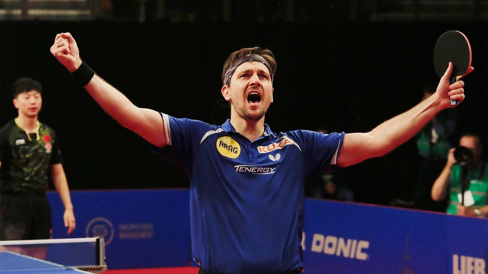

Zhang Jike
Zhang Jike is a Chinese table tennis player. Zhang became the fourth male player in the history of table tennis to achieve a career Grand Slam when he won gold in men's singles at the Olympic games in London 2012.
Zhang Jike
Zhang Jike
Ma Long is a Chinese table tennis player. The current Olympic and World Champion, he is ranked number 3 in the world by the International Table Tennis Federation. He has held the ranking of number 1 for a total of 64 months, the most by any male player in the history of table tennis.
Ma long

Timo Boll
Timo Boll is a German professional table tennis player, who currently plays for Borussia Düsseldorf. He is ranked second in the German Table Tennis National League, and sixth in the ITTF world rankings as of June 2019
Timo Boll